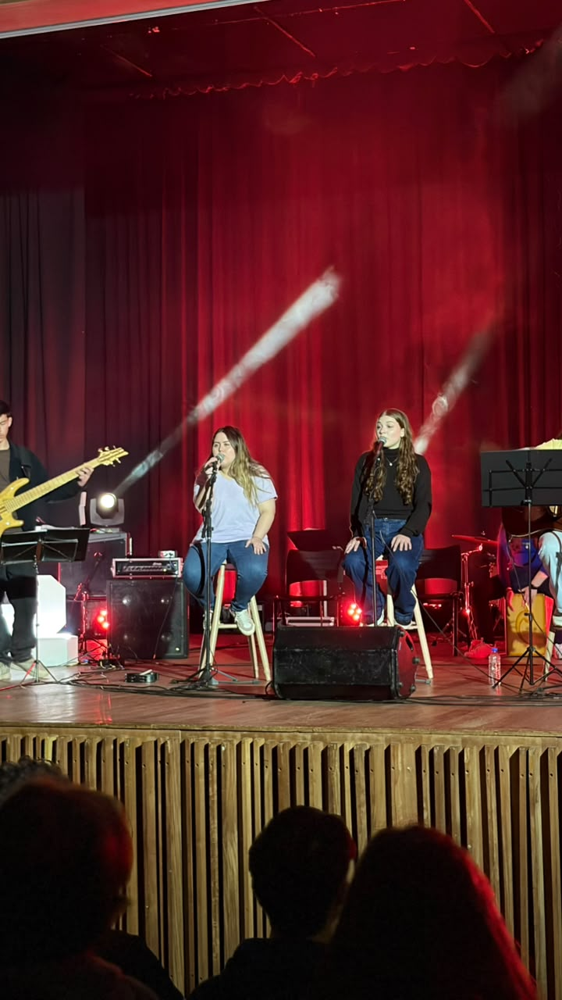

IF-Música Clube
O projeto IF-Música Clube, porque foi uma experiência que me fez ter responsabilidade com o grupo, além de cuidar da organização dos ensaios e ter calma nas situações difíceis.O IF-Música Clube foi o projeto que mais marcou minha passagem pelo IFRS, onde atuei na organização e gestão das atividades culturais do grupo. Meu papel envolveu o planejamento e a logística — organizando agendamentos de ensaios, listas de presença e a inscrições em eventos importantes—, além da comunicação e divulgação. Também fui responsável pela documentação do projeto por meio de registros em fotos e vídeos, montagem de portfólio e apoio em relatórios, bem como pela articulação com a comunidade, auxiliando no contato com convidados e na organização de apresentações em eventos externos. Essa experiência me ensinou a ter responsabilidade coletiva, liderança e calma diante de situações desafiadoras.
